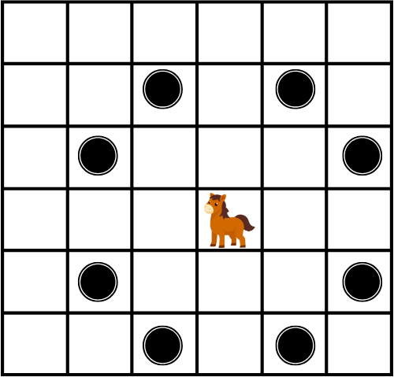

Bem vindo ao Jogo do Cavalo
# Como jogar:
1- Toque ou clique na posição para a qual quer que o cavalo vá e assim sucessivamente.
2- Você só poderá movimentar o cavalo para uma posição na qual forme a letra L do ponto de partida, conforme imagem abaixo:

3- A letra L poderá ser formada em qualquer direção, desde que dentro do tabuleiro.
# Como ganhar:
1- O jogador só ganha a partida quando o cavalo tiver preenchido todos os espaços, dando por encerrado o jogo.
# Resultado
1- Se o cavalo ficar preso em uma posição onde não puder se movimentar o jogo é encerrado e o jogador perde.
Placar
Pontos: 0
Tabuleiro: 6
Quero Dicas: